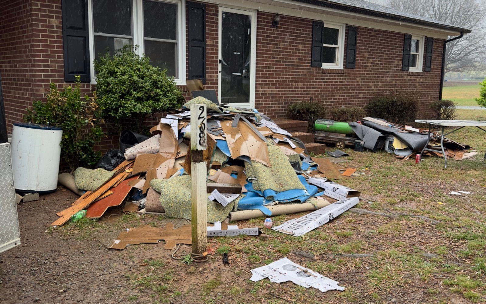

Cleanout questions
Can you leave stuff behind when selling a house?
Sometimes, yes—but only if the buyer agrees. Furniture, personal belongings, and debris do not automatically become the buyer's responsibility just because they were in the house during a walkthrough.
Short answer: You can leave stuff behind when selling a house if the buyer accepts it in writing. In an as-is direct sale, furniture, debris, and leftover belongings may be handled as part of the offer. Spell out what stays, what goes, and who is responsible after closing.
What buyers need to know
Cleanout is not one simple number. A few boxes in a closet are different from a full house, garage, shed, basement, or unsafe debris. Photos and honest details help a buyer estimate the work without surprises.
- Which rooms have belongings?
- Are there sheds, garages, attics, crawl spaces, or outbuildings?
- Is anything hazardous, heavy, wet, damaged, or hard to access?
- Are there items the family still needs to remove?

Will it affect the offer?
Possibly. Cleanout can affect labor, disposal cost, timing, and risk. But it may still be better than hiring help yourself, especially if the property already needs repairs or the family is trying to settle an inherited house.
Put it in writing
Do not rely on a casual “that’s fine” conversation. The contract or written agreement should make clear what stays, what goes, who handles personal property, and what happens if something changes before closing.
Frequently asked questions
Can you leave stuff behind when you sell your house?
Sometimes. The buyer needs to agree, and the written agreement should identify what may remain. Otherwise, the seller may still be expected to remove personal property before possession changes.
Can you leave furniture when selling a house?
Yes, if the buyer accepts it in writing. Make a list or use clear photos so both sides understand which furniture stays and whether any items are excluded.
Does leaving belongings affect an as-is offer?
It can. A buyer may account for labor, dumpsters, disposal fees, heavy items, hazardous materials, or extra time when reviewing the property.
Before you rent a dumpster
Ask whether cleanout can be part of the review.
Send the address and explain what is left in the house. We will factor it into the conversation.